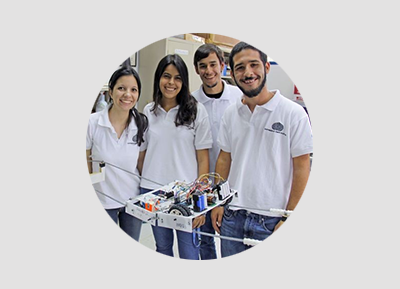
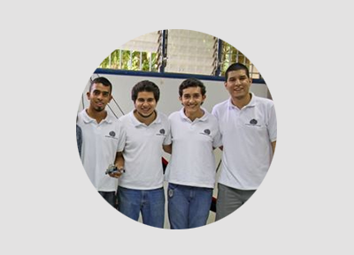

Equipos del Grupo de Inteligenca Artificial traen dos premios a la USB
Nuestro laboratorio obtuvo dos primeros lugares en la V Competencia Nacional de Robótica
UNETBots 2015, que se llevó a cabo en San Cristóbal, del 28 al 30 de octubre, y donde participaron estudiantes de diferentes
universidades de todo el país. El GIA participó en las categorías Desafío y Velocista. En la categoría Desafío se enfrentaron 7 equipos, mientras que en Velocista participaron 16 equipos.

La categoría Desafío simula, en menor escala, el recorrido sobre cables de transmisión de electricidad, detección y reporte
de la ubicación de fallas en la línea. Además, los robots autónomos que participen deben remover la maleza de dichas líneas.
El equipo EnerGIA conformado por Raúl Bander, Lalezka Duque, David Hernández y Catherine Lollett obtuvo el primer lugar de la categoría, seguidos por los equipos ULA-Ingeniería de la Universidad de los Andes (ULA) y Dgipar de la Universidad Nacional
Experimental de Guayana (UNEG), los cuales obtuvieron el segundo y tercer lugar, respectivamente.

Por otro lado, en la categoría Velocista se debía construir un robot autónomo que completara un circuito en la menor
cantidad de tiempo posible. Este año el circuito incluía obstáculos de madera que debían esquivarse sin salirse de la pista.
Nuestro equipo GIAKart conformado por Eliot Díaz, Anthony El Kareh, Marcos Jota y Arturo Toro, obtuvo el primer lugar de la categoría, seguidos por IngPoz de COMSIGUA-UNEXPO quienes obtuvieron el segundo lugar. El tercer lugar quedó desierto ya que
solo estos dos equipos lograron completar el circuito de la fase final.
La Competencia Nacional de Robótica se celebra anualmente fomentando la construcción de robots autónomos, con el objetivo de
promover el desarrollo de áreas como la computación, electrónica y mecánica.